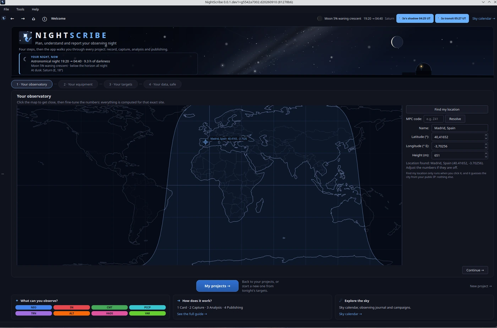

01. Primeros pasos


Instalación
Tres caminos, según lo cómodo que te sientas con un terminal:
Instalador Windows (sin Python): descarga
NightScribeSetup-*.exede la página de releases y ejecútalo. Windows SmartScreen avisará porque el binario no está firmado: Más información → Ejecutar de todas formas.pip:
pip install nightscribedentro de un entorno virtual, y luegonightscribe gui.Desde el código fuente (si piensas contribuir): clona el repositorio, crea el entorno y ejecuta
.venv/bin/python -m nightscribe gui.
Los pasos detallados, sistema por sistema, están en INSTALL.es.md.
En cualquier caso necesitas conexión a internet: las efemérides y catálogos se descargan al vuelo (y se guardan en caché local, así que la segunda consulta del mismo objeto ya no toca la red).
La primera ejecución: la pantalla de bienvenida
La primera vez que arrancas, NightScribe te pide lo mínimo para poder trabajar. Todo lo que respondas aquí se puede cambiar después en Herramientas → Configuración….
Tu observatorio
Tres formas de decirle dónde estás; elige una:
Tu código MPC (por ejemplo
Z41): las coordenadas se resuelven solas desde la lista oficial del Minor Planet Center. Es la opción más precisa si vas a enviar astrometría, porque usa exactamente el mismo punto que verá el MPC en tus reportes.«Buscar mi ubicación»: resuelve tu ciudad a partir de la IP pública. Bien para empezar, pero revisa las coordenadas: una IP no sabe en qué azotea está tu telescopio.
«Elegir en el mapa…» o escribir latitud, longitud y altura a mano.
¿Por qué tanta insistencia en las coordenadas? Todo lo demás se deriva de ellas: qué es visible esta noche, a qué altura, cuándo empieza y acaba el crepúsculo. Y en astrometría de cuerpos menores, un error de 100 m en tu posición se traduce en un error medible en la posición del asteroide, porque la paralaje topocéntrica de un NEO cercano puede superar el segundo de arco.
Tu equipo
Apertura del telescopio y magnitud límite realista de tu sitio: NightScribe las usa para no proponerte objetos que no puedes alcanzar.
Escala de placa: tamaño de píxel de la cámara y focal del telescopio. Si tu cámara está en la lista de preajustes, al elegirla se rellenan el píxel y un perfil fotométrico de partida (ruido de lectura, pozo de electrones, exposición de trabajo).
¿Por qué importa la escala de placa? De píxel y focal salen los segundos de arco por píxel, y de ahí cuánto se mueve un NEO en una exposición o qué apertura fotométrica cabe entre dos estrellas. Un valor mal puesto no rompe nada, pero degrada los consejos.
Qué quieres seguir
Una tarjeta por tipo de objetivo (NEOs, cometas, supernovas, variables, tránsitos...). Desmarca lo que no te interese: la lista de esta noche será más corta y más útil. Los tipos nuevos que traiga una actualización vienen activados, para que no te los pierdas.
Tus datos
NightScribe guarda todo (proyectos, observaciones, caché) en una base de datos local. En cada actualización hace primero una copia de seguridad verificada y te lo cuenta en esta misma pantalla; si algo no cuadra, lo verás aquí antes de tocar nada.
Configuración: lo que cambiarás alguna vez
En Herramientas → Configuración… vive lo que no cabía en la bienvenida. El capítulo 10. Configuración la recorre entera; aquí, lo que merece una visita pronto:
Idioma de la interfaz: español, inglés o el del sistema. Se aplica al reiniciar.
Perfil de cámara fotométrica: ganancia (e⁻/ADU), ruido de lectura y linealidad. Son los números que convierten la barra de error de tus medidas en algo honesto; el preset da valores de partida, pero la ganancia y la linealidad dependen de tu unidad y tu ganancia, y NightScribe puede medirlas en tus propias tomas (capítulo 06).
Horizonte local: si tu observatorio tiene obstáculos (edificios, árboles, montañas), puedes cargar un fichero de horizonte. La planificación dejará de proponerte objetos detrás del vecino.
Solver de placa: ASTAP local si lo tienes instalado, con nova.astrometry.net como respaldo. Necesario para la astrometría (capítulo 07).
Integraciones opcionales: CCDciel (captura, capítulo 05), claves de NEOfixer, Astrometry.net, TNS y AAVSO. Ninguna es obligatoria: sin ellas la función correspondiente simplemente se queda callada.
¿Por qué piden un token de AAVSO? Las vigilias de estrellas brillantes (T CrB, R CrB) comparan el estado actual con la fotometría que la comunidad sube a la AAVSO, y esa API exige identificarse. Sin token, las vigilias no molestan; con token, te avisan el día que T CrB estalle.
Siguiente: 02. Planificar la noche.